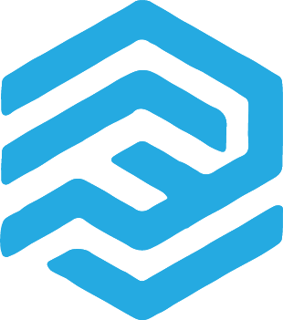

Work from anywhere, at anytime with an easy-to-use interface on a secure infrastructure
Explore untapped productivity with powerful all-in-one task tool for your remote workforce
Learn More >A key enabling technology to work-from-anywhere operational model

Capabilities
“Empowering the modern and agile workforce to ensure business continuity at all times”
ARION FACILITATES THE NEW NORM: ‘OUT-OF-OFFICE’
Increasingly, organizations are experimenting with the ‘work-from-home’ or ‘work-from-anywhere’ practice as part of ensuring business continuity or productivity or cost-efficiency and so on amid unforeseen challenges that inhibits our ability to operate in a desired operational model for an organization.
Read More >WITH ARION, SECURITY AND ACCESS CONTROL IS UNCOMPROMISED AT ALL TIMES
ARION facilities are those of necessity for today’s secure environment for out-of-office access. Our approach to Privileged Access Management (PAMS) as part of its overall Secured(S) Access (A) Management (M) strategy. Its fundamental design is based on the following core implementation as shown below, which defines that Privileged Access Management is not to be done in isolation. It needs to be tightly integrated with Access control and Complete Surveillance.
Read More >Solutions


USAM
Universal Secure Access Management
Read More >

VARIA
Multi-factor Authentication Platform
Read More >

FALCON
Enterprise Monitoring & Dashboards
Read More >

Arion platform is one of the key enabling technology driver to implement the work-from-anywhere operational model.
The user base for Arion are broadly the business partners, contractors and employees. While answering questions such as Who are you and What you can access, it can constructively strive to manage access, control and audit of access to business applications, platforms, databases and systems.
Arion, a robust work-from-anywhere solution can fully automate the provisioning and de-provisioning process, giving Arion Administrators full power over the access rights of employees, partners, contractors, vendors, and guests. Automated provisioning and de-provisioning speed the enforcement of strong security policies while helping to eliminate human error.
Arion is a vendor-agnostic platform that can deliver 3rd party services such as Microsoft Office365 including Microsoft Teams and Atlassian Confluence collaboration tools that aggregates different components of collaborative work in a shared workspace where users can chat, have video calls, and share files.
ARION THWARTS RISKS OF DATA BREACHES
Over the years, passwords and password encryption methods have become more complex, but so have the dexterity of hackers. Passwords can be obtained illegally through phishing, brute forcing or legally by being shared by users for convenience. This way, organizations are largely clueless when a password was compromised and access is granted to all who enter it. In today’s thread landscape, relying on just a username and password is therefore no longer sufficient or advisable.
ARION’S Enterprise class MFA offers multitude of security features
MOBILE APPS AUTHENTICATION FACTOR
Mobile apps equipped as the most cost-effective solution, supporting various authentication methods such as Push, TOTP and QR code and the apps are secured with password, PIN and fingerprint
ACCESS CONTROL
Single point of control to disable a user’s access instead of having to disable access in all applications
FUTURE-PROOF
Any new MFA mechanisms (e.g. Facial recognition as MFA) or technology (more secure cryptography algorithms) need only be upgraded in MFASP rather than in all applications
ANYTIME AND ANYWHERE
Based on latest TOTP mechanism that is trusted and used by major companies like Google, Microsoft, Facebook, Amazon, LastPass, etc. MFASP does not require any mobile or network connectivity between device and server, so it can be used even travelling or when mobile connectivity is limited
APPLICATION SUPPORT
Supports both web-based and client-based applications. Simple integration using RESTful APIs
Benefits
Portable
Future MFA mechanisms easily applied without upgrading of target systems
Centralized
Centralized MFA for ease of management and enterprise-wide visibility
Single MFA Multiple Target System
Single MFA touch point for end users to access multiple target systems within an organization
Flexibility
Supports virtually every type of web application
Variety of Authentication Options
Variety of authentication options to suit your needs, offline or online, with or without mobile application
One-time Configuration
Easy one-time configuration of target systems
ARION MITIGATES WORRIES ON DOWNTIMES

ENTERPRISE MONITORING AND DASHBOARD SYSTEM FACILITY FOR ARION IS PROVIDED BY SILVERLAKE FALCON
Falcon is a powerful and affordable enterprise-level real-time monitoring system to gather and analyze events from servers, virtual machines, cloud and network devices enabling the user to quickly detect, diagnose, and resolve problems and service outages.
“Secure, Transparent, Uninterrupted – there is no reason why one cannot work outside the physical enterprise”
Read More >Watch Videos
Further Reading
Malicious actors aren't taking a break while you #WorkfromAnywhere. Neither should your cyber security solutions to protect the remote workforce.
Now that employees are increasingly working rom home and you have done what you think is secure for remote workforce, it’s important to make sure that the security awareness culture you were building in the office continues to live on in these remote working environments. Read more to find out what we offer to make your security awareness and defences seamless and unquestionable.
Overview > Infographic >